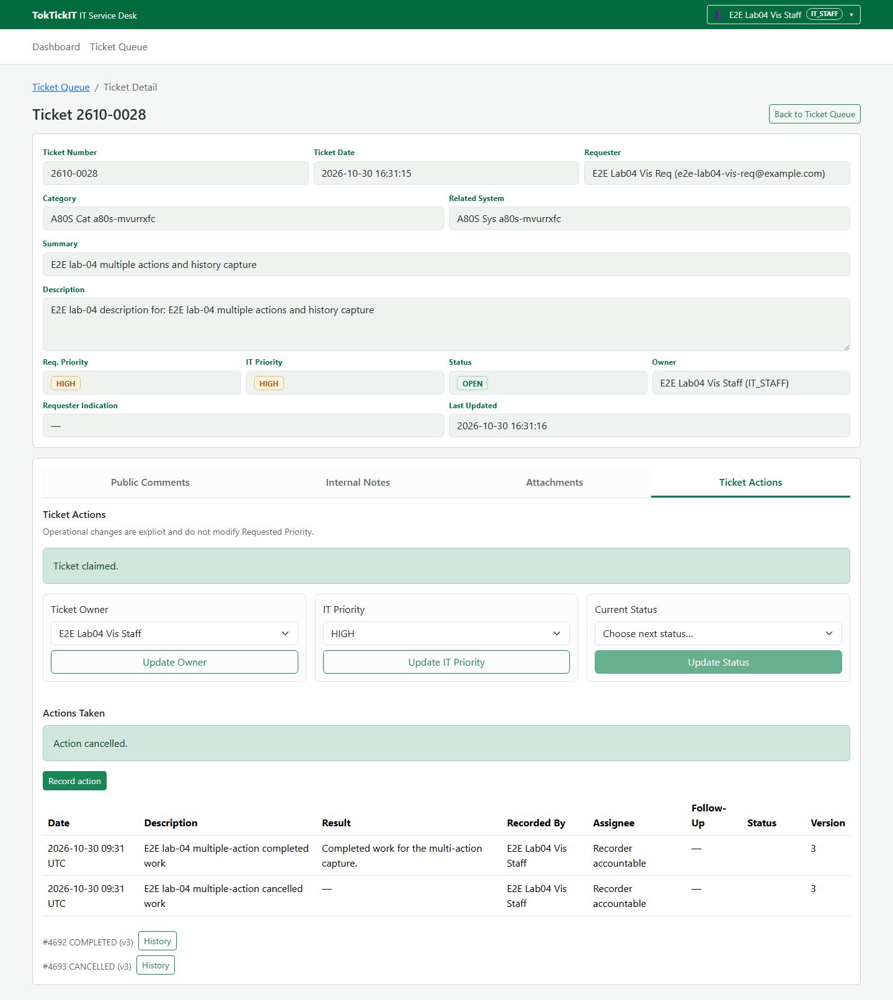
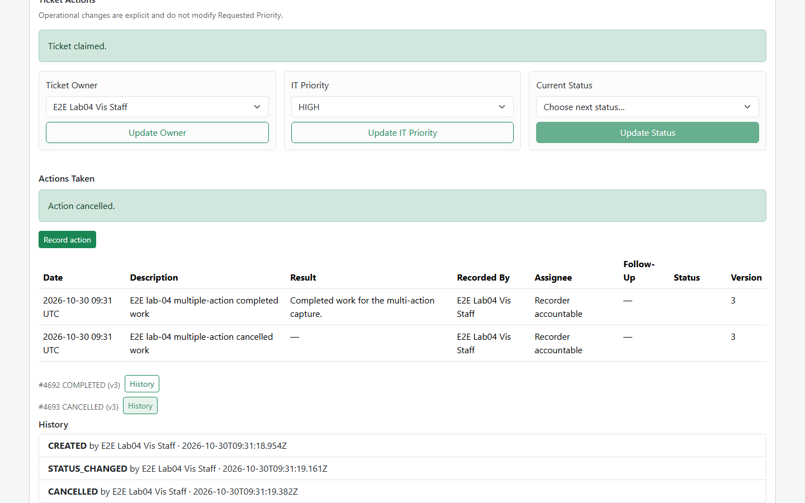

Draft status: release PR approval/merge and the main push CI evidence are not available yet. Do not treat this draft as the final submission or render the final PDF until those gates are complete.
The release branch is feature/31-release-integration, based on lab4-staging. The owner approved plan rev14 before BUILD. See the reviewer record for reviewed PR history. The release PR, its exact reviewed head, approval, merge commit, final board state, and final README/ignore evidence remain to be appended after their gates.
The Lab 4 requirements and technical contracts are recorded in the specification, API specification, and UI specification. These documents define the scope and verification criteria for this release.
The test plan maps acceptance criteria to tests and current evidence. Local verification includes the targeted E2E-02/E2E-03 Playwright run (2 passed on 2026-10-30), with other local results listed in the test plan and evidence ledger.
Main release output: pending. Record the E-16 push-run URL/ID, four job conclusions, and the exact MAIN_MERGE pin after release merge and successful hosted CI. No final-main result is claimed here.
AI tools, models, prompt summaries, and reflection are documented in the AI use record. The owner reported using OpenCode and Codex with luna 6, deepseek 4.1, and GLM 5.3.
Dashboard metric-to-dataset verification is summarized in the metric-vs-DB evidence. The record includes the direct database comparison and test output reference.
The Actions Taken evidence includes list, create, lifecycle, completion, cancellation, and history states:


Action lifecycle ordering, role visibility, and append-only history are covered by the API specification, the tests listed in the test plan, and the history evidence shown above.
Requester dashboard ownership and drill-down behavior are covered by the test plan and metric-vs-DB evidence. Local dashboard E2E verification passed; exact-main hosted verification remains pending.
Responsive and accessibility requirements are described in the UI specification. The visual/a11y checklist records the checks and screenshot inventory. Final rendered screenshots and PDF fidelity checks remain before submission.